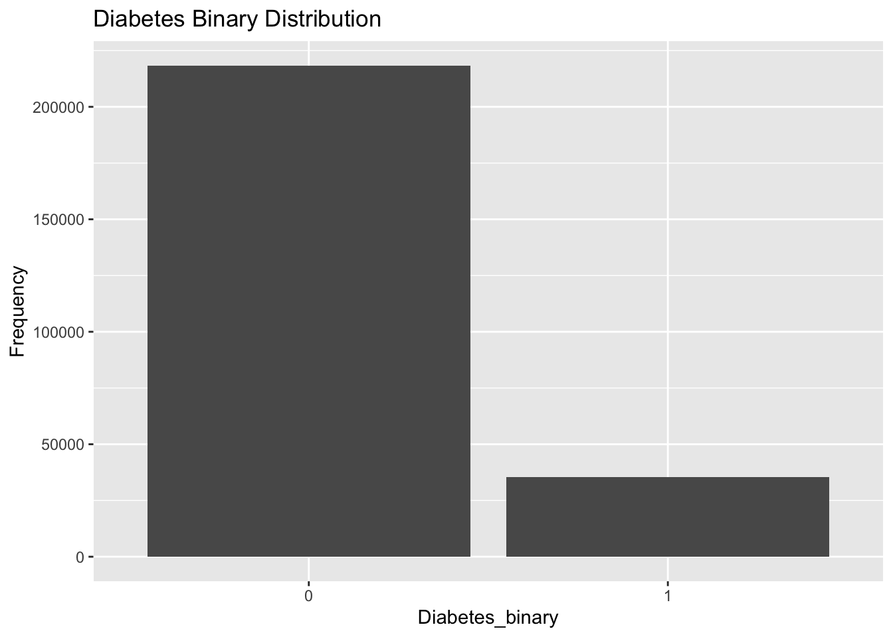
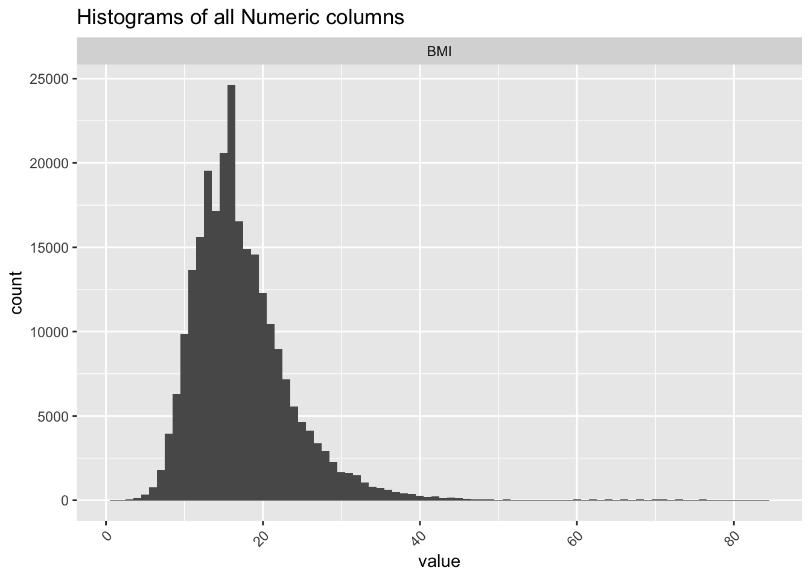
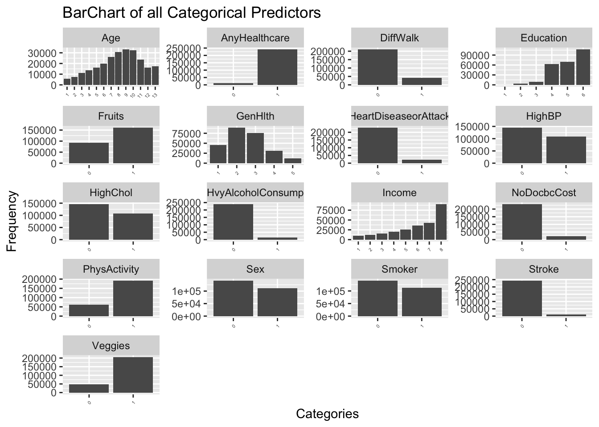
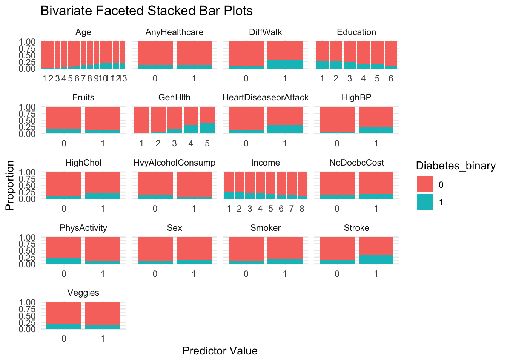
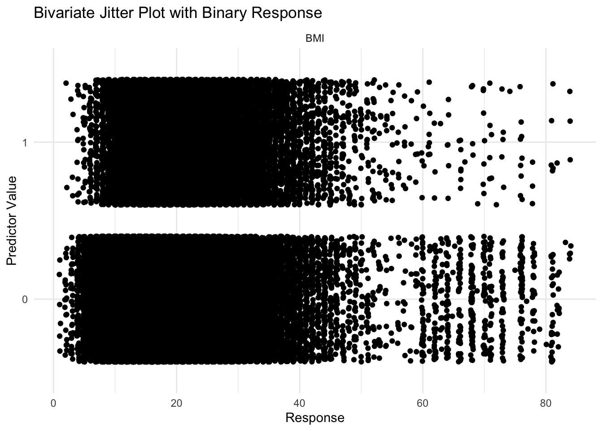
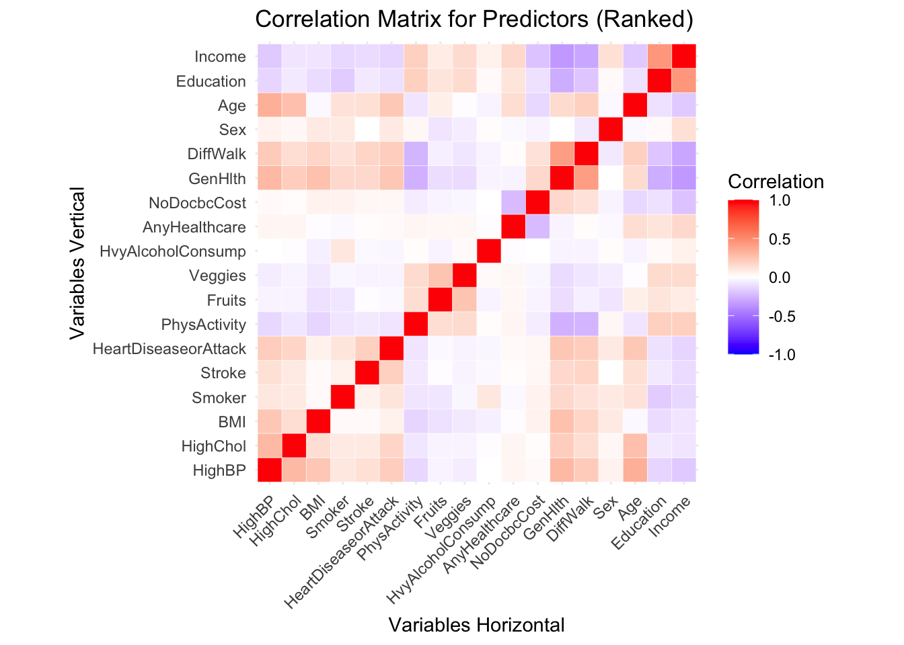

#Packages
library(tidyverse)
library(caret)
library(ggplot2)
library(plotly)
library(reshape2)
library(caret)
library(Metrics)
library(ranger)EDA
Document Details
Collaborators: N/A
Assignment: Final Project - EDA
Date: 26JUL24
Purpose
Perform Exploratory Data Analysis with Diabetes Data set before modelling.
Introduction
Selected Variables
The diabetes_binary_health_indicators_BRFSS2015.csv dataset from Kaggle contains health-related data collected from the Behavioral Risk Factor Surveillance System (BRFSS) 2015 survey. This dataset is used to analyze various health indicators and their relationship to diabetes. The response variable, Diabetes_binary, indicates whether a respondent has diabetes. Below is a brief description of each variable in the dataset used for modelling:
Diabetes_binary: The Response Binary variable indicating whether the respondent has diabetes (1) or not (0).
HighBP: Binary variable indicating whether the respondent has high blood pressure (1) or not (0).
HighChol: Binary variable indicating whether the respondent has high cholesterol (1) or not (0).
BMI: Continuous variable representing the Body Mass Index (BMI) of the respondent.
Smoker: Binary variable indicating whether the respondent has smoked at least 100 cigarettes in their lifetime (1) or not (0).
Stroke: Binary variable indicating whether the respondent has had a stroke (1) or not (0).
HeartDiseaseorAttack: Binary variable indicating whether the respondent has had coronary heart disease or a myocardial infarction (1) or not (0).
PhysActivity: Binary variable indicating whether the respondent has engaged in physical activity (excluding their regular job) in the past 30 days (1) or not (0).
Fruits: Binary variable indicating whether the respondent consumes fruit at least once per day (1) or not (0).
Veggies: Binary variable indicating whether the respondent consumes vegetables at least once per day (1) or not (0).
HvyAlcoholConsump: Binary variable indicating heavy alcohol consumption, defined as more than 14 drinks per week for men and more than 7 drinks per week for women (1) or not (0).
AnyHealthcare: Binary variable indicating whether the respondent has any kind of health care coverage (1) or not (0).
NoDocbcCost: Binary variable indicating whether the respondent could not see a doctor in the past 12 months due to cost (1) or not (0).
GenHlth: Ordinal variable indicating the respondent’s general health status, with values ranging from 1 (excellent) to 5 (poor).
DiffWalk: Binary variable indicating whether the respondent has serious difficulty walking or climbing stairs (1) or not (0).
Sex: Binary variable indicating the sex of the respondent (1 for female, 0 for male).
Age: Ordinal variable indicating the age category of the respondent, with values ranging from 1 (18-24 years) to 13 (80 years or older).
Education: Ordinal variable indicating the highest level of education completed by the respondent, with values ranging from 1 (never attended school or only kindergarten) to 6 (college graduate).
Income: Ordinal variable indicating the annual household income of the respondent, with values ranging from 1 (less than $10,000) to 8 ($75,000 or more).
The ultimate goal of modeling this dataset is to develop predictive models that can accurately identify individuals at risk of having diabetes based on various health indicators. In the following sections, we will explore this data and build models to predict the presence of diabetes based on these health indicators.
Exploratory Data Analysis (EDA) Plan
Performing EDA ensures that we start with a deep understanding of our data, leading to more informed and effective modeling decisions. Specifically, to identify patterns, distribution and insights associated with prediction and response variables, Following EDA will be performed:
- Inspect the Data -Understand the structure of the dataset, check for missing values, and get an overview of the variables using
str()andis.na(). - Descriptive Statistics -Summarize the central tendency, dispersion, and shape of the dataset’s variables using
summary(). - Distribution of Target Variable -Understand and explore the binary response variables’ distribution with bar chart to check for class imbalance
- Univariate Analysis -Understand and explore the prediction variables’ distribution with histograms(for continuous variables) and bar charts (for categorical variables) using
ggplot - Bivariate Analysis -Examine relationships between the response variable and each independent variable,r .
- Correlation Analysis- Examine relationships between the prediction variables with each other via a correlation matrix to check for multicolinearity using
cor()from base R.
Data
Importing Packages and Reading Data
Importing necessary packages for EDA
Loading the data into diabetes_data object using read_csv()
#reading in data
diabetes_data <- read_csv("diabetes_binary_health_indicators_BRFSS2015.csv")
Looking at the structure of data using str() to determine what kind of pre-processing is needed
str(diabetes_data)spc_tbl_ [253,680 × 22] (S3: spec_tbl_df/tbl_df/tbl/data.frame)
$ Diabetes_binary : num [1:253680] 0 0 0 0 0 0 0 0 1 0 ...
$ HighBP : num [1:253680] 1 0 1 1 1 1 1 1 1 0 ...
$ HighChol : num [1:253680] 1 0 1 0 1 1 0 1 1 0 ...
$ CholCheck : num [1:253680] 1 0 1 1 1 1 1 1 1 1 ...
$ BMI : num [1:253680] 40 25 28 27 24 25 30 25 30 24 ...
$ Smoker : num [1:253680] 1 1 0 0 0 1 1 1 1 0 ...
$ Stroke : num [1:253680] 0 0 0 0 0 0 0 0 0 0 ...
$ HeartDiseaseorAttack: num [1:253680] 0 0 0 0 0 0 0 0 1 0 ...
$ PhysActivity : num [1:253680] 0 1 0 1 1 1 0 1 0 0 ...
$ Fruits : num [1:253680] 0 0 1 1 1 1 0 0 1 0 ...
$ Veggies : num [1:253680] 1 0 0 1 1 1 0 1 1 1 ...
$ HvyAlcoholConsump : num [1:253680] 0 0 0 0 0 0 0 0 0 0 ...
$ AnyHealthcare : num [1:253680] 1 0 1 1 1 1 1 1 1 1 ...
$ NoDocbcCost : num [1:253680] 0 1 1 0 0 0 0 0 0 0 ...
$ GenHlth : num [1:253680] 5 3 5 2 2 2 3 3 5 2 ...
$ MentHlth : num [1:253680] 18 0 30 0 3 0 0 0 30 0 ...
$ PhysHlth : num [1:253680] 15 0 30 0 0 2 14 0 30 0 ...
$ DiffWalk : num [1:253680] 1 0 1 0 0 0 0 1 1 0 ...
$ Sex : num [1:253680] 0 0 0 0 0 1 0 0 0 1 ...
$ Age : num [1:253680] 9 7 9 11 11 10 9 11 9 8 ...
$ Education : num [1:253680] 4 6 4 3 5 6 6 4 5 4 ...
$ Income : num [1:253680] 3 1 8 6 4 8 7 4 1 3 ...
- attr(*, "spec")=
.. cols(
.. Diabetes_binary = col_double(),
.. HighBP = col_double(),
.. HighChol = col_double(),
.. CholCheck = col_double(),
.. BMI = col_double(),
.. Smoker = col_double(),
.. Stroke = col_double(),
.. HeartDiseaseorAttack = col_double(),
.. PhysActivity = col_double(),
.. Fruits = col_double(),
.. Veggies = col_double(),
.. HvyAlcoholConsump = col_double(),
.. AnyHealthcare = col_double(),
.. NoDocbcCost = col_double(),
.. GenHlth = col_double(),
.. MentHlth = col_double(),
.. PhysHlth = col_double(),
.. DiffWalk = col_double(),
.. Sex = col_double(),
.. Age = col_double(),
.. Education = col_double(),
.. Income = col_double()
.. )
- attr(*, "problems")=<externalptr> Removing the columns CholCheck, MentHlth and PhysHlth as we wont be using them for modelling using select()
diabetes_data <- diabetes_data |>
select(-c(CholCheck,MentHlth,PhysHlth))Descriptive Statistics of data using summary(). (This is done before coercing to factors as this will yield useful stats like p_hat and s_error(p_hat)
summary(diabetes_data) Diabetes_binary HighBP HighChol BMI
Min. :0.0000 Min. :0.000 Min. :0.0000 Min. :12.00
1st Qu.:0.0000 1st Qu.:0.000 1st Qu.:0.0000 1st Qu.:24.00
Median :0.0000 Median :0.000 Median :0.0000 Median :27.00
Mean :0.1393 Mean :0.429 Mean :0.4241 Mean :28.38
3rd Qu.:0.0000 3rd Qu.:1.000 3rd Qu.:1.0000 3rd Qu.:31.00
Max. :1.0000 Max. :1.000 Max. :1.0000 Max. :98.00
Smoker Stroke HeartDiseaseorAttack PhysActivity
Min. :0.0000 Min. :0.00000 Min. :0.00000 Min. :0.0000
1st Qu.:0.0000 1st Qu.:0.00000 1st Qu.:0.00000 1st Qu.:1.0000
Median :0.0000 Median :0.00000 Median :0.00000 Median :1.0000
Mean :0.4432 Mean :0.04057 Mean :0.09419 Mean :0.7565
3rd Qu.:1.0000 3rd Qu.:0.00000 3rd Qu.:0.00000 3rd Qu.:1.0000
Max. :1.0000 Max. :1.00000 Max. :1.00000 Max. :1.0000
Fruits Veggies HvyAlcoholConsump AnyHealthcare
Min. :0.0000 Min. :0.0000 Min. :0.0000 Min. :0.0000
1st Qu.:0.0000 1st Qu.:1.0000 1st Qu.:0.0000 1st Qu.:1.0000
Median :1.0000 Median :1.0000 Median :0.0000 Median :1.0000
Mean :0.6343 Mean :0.8114 Mean :0.0562 Mean :0.9511
3rd Qu.:1.0000 3rd Qu.:1.0000 3rd Qu.:0.0000 3rd Qu.:1.0000
Max. :1.0000 Max. :1.0000 Max. :1.0000 Max. :1.0000
NoDocbcCost GenHlth DiffWalk Sex
Min. :0.00000 Min. :1.000 Min. :0.0000 Min. :0.0000
1st Qu.:0.00000 1st Qu.:2.000 1st Qu.:0.0000 1st Qu.:0.0000
Median :0.00000 Median :2.000 Median :0.0000 Median :0.0000
Mean :0.08418 Mean :2.511 Mean :0.1682 Mean :0.4403
3rd Qu.:0.00000 3rd Qu.:3.000 3rd Qu.:0.0000 3rd Qu.:1.0000
Max. :1.00000 Max. :5.000 Max. :1.0000 Max. :1.0000
Age Education Income
Min. : 1.000 Min. :1.00 Min. :1.000
1st Qu.: 6.000 1st Qu.:4.00 1st Qu.:5.000
Median : 8.000 Median :5.00 Median :7.000
Mean : 8.032 Mean :5.05 Mean :6.054
3rd Qu.:10.000 3rd Qu.:6.00 3rd Qu.:8.000
Max. :13.000 Max. :6.00 Max. :8.000 Converting categorical variables and response variable into factors type using as.factor() within mutate(). To achieve this, we first convert all columns into factor and then convert the numeric variable back to type numeric using as.numeric() in mutate().
diabetes_processed <- diabetes_data |>
#Converts all columns to factors
mutate(across(everything(),as.factor)) |>
#Converts the only non-categorical variable back to numeric
mutate(BMI = as.numeric(BMI))
head(diabetes_processed)# A tibble: 6 × 19
Diabetes_binary HighBP HighChol BMI Smoker Stroke HeartDiseaseorAttack
<fct> <fct> <fct> <dbl> <fct> <fct> <fct>
1 0 1 1 29 1 0 0
2 0 0 0 14 1 0 0
3 0 1 1 17 0 0 0
4 0 1 0 16 0 0 0
5 0 1 1 13 0 0 0
6 0 1 1 14 1 0 0
# ℹ 12 more variables: PhysActivity <fct>, Fruits <fct>, Veggies <fct>,
# HvyAlcoholConsump <fct>, AnyHealthcare <fct>, NoDocbcCost <fct>,
# GenHlth <fct>, DiffWalk <fct>, Sex <fct>, Age <fct>, Education <fct>,
# Income <fct>Checking for any missing data:
#Missing values in each column
colSums(is.na(diabetes_data)) Diabetes_binary HighBP HighChol
0 0 0
BMI Smoker Stroke
0 0 0
HeartDiseaseorAttack PhysActivity Fruits
0 0 0
Veggies HvyAlcoholConsump AnyHealthcare
0 0 0
NoDocbcCost GenHlth DiffWalk
0 0 0
Sex Age Education
0 0 0
Income
0 Summarizations
Response Variable
Since the response variable is binary, we can obtain estimates “p_hat” and “q_hat”
#Properly coeerce factors to numeric
binary_vec <- data.frame(diabetes_processed$Diabetes_binary)
binary_vec$diabetes_processed.Diabetes_binary <- as.numeric(binary_vec$diabetes_processed.Diabetes_binary)
binary_vec$bool <- ifelse(
binary_vec$diabetes_processed.Diabetes_binary == 1,yes = 0,no = 1 )
head(binary_vec) diabetes_processed.Diabetes_binary bool
1 1 0
2 1 0
3 1 0
4 1 0
5 1 0
6 1 0p_hat <- sum((binary_vec$bool))/length(diabetes_processed$Diabetes_binary)
q_hat <- 1-p_hat
paste("p_hat is", p_hat); paste("q_hat is", q_hat)[1] "p_hat is 0.139333017975402"[1] "q_hat is 0.860666982024598"Visualizing the response variable distribution using histogram. This tells us if there is class imbalance
ggplot(data = diabetes_processed, aes(x = Diabetes_binary )) +
geom_bar(show.legend = TRUE) +
xlab(label = "Diabetes_binary") +
ylab(label = "Frequency") +
ggtitle(label = "Diabetes Binary Distribution")
There is a class imbalance, therefore using logloss is preferable over accuracy to train models.
Predictor Variables
Univariate Analysis
Exploring the individual distribution of predictor variables:
- Gives an overview of the central tendency and variability of the variable
- Visualizing the distribution is crucial for identifying skewness and the presence of any outlines.
- Check validity of predictor entries (check for non logical entries)
Returning mean for each column using colMeans() to yield mean for each predictor. This checks for class imbalance and non logical entries
#Using the numeric Dataset "Diabetes_Data"
diabetes_data |>
select(-Diabetes_binary) |>
colMeans() HighBP HighChol BMI
0.42900110 0.42412094 28.38236361
Smoker Stroke HeartDiseaseorAttack
0.44316856 0.04057080 0.09418559
PhysActivity Fruits Veggies
0.75654368 0.63425576 0.81141990
HvyAlcoholConsump AnyHealthcare NoDocbcCost
0.05619678 0.95105251 0.08417692
GenHlth DiffWalk Sex
2.51139231 0.16822375 0.44034216
Age Education Income
8.03211921 5.05043362 6.05387496 Visualizing distributions of numeric variables (only one present in this case) by faceted histograms. To do this, we use gather() to generate key value pairs: “variable” and “value”. We set x = value and facet using facet_wrap(~variable)
# Reshape the dataframe to long format
df_long_num <- gather(diabetes_processed |>
select(-Diabetes_binary) |>
select(where(is.numeric)), key = "variable", value = "value")
# Create the combined histogram plot
ggplot(df_long_num, aes(x = value)) +
geom_histogram(binwidth = 1) +
theme(axis.text.x = element_text(angle = 45,
vjust = 1,
hjust = 1)) +
facet_wrap(~ variable, scales = "free") +
ggtitle("Histograms of all Numeric columns")
Visualizing distributions of categorical variables similarly except using geom_bar() to yeild bar plots for binary and ordinal variables in the dataset.
# Reshape the dataframe to long format
df_long_fact <- gather(diabetes_processed |>
select(-Diabetes_binary) |>
select(where(is.factor)), key = "variable", value = "value")
# Create the combined histogram plot
ggplot(df_long_fact, aes(x = as.factor(as.numeric(value)))) +
geom_bar() +
theme(axis.text.x = element_text(angle = 45,
vjust = 1,
hjust = 1,
size = 4) ) +
facet_wrap(~ variable, scales = "free",ncol = 4) +
ggtitle("BarChart of all Categorical Predictors") +
xlab("Categories")+
ylab("Frequency")
Bivariate Analysis
Exploring the relationship of predictor variables with response:
- Helps in selecting and prioritizing predictor variables with strong associations with the response variable
- Detects patterns or trends in the data, such as linear or non-linear relationships, which can guide the choice of models and transformations.\
Visualizing relationships of categorical variables by faceted stacked bar plots. To do this, we create a long data set using pivot_longer() . Then we create stacked bar plots using fill argument within aes() and use geom_bar() . This visualizes the proportion of response in each group/category of the corresponding predictor variables.
#Select Categorical Variables
df_pred <- diabetes_processed |>
select(-c(Diabetes_binary,BMI))
#Create Long Dataset
df_long_bi <- diabetes_processed |>
pivot_longer(cols = colnames(df_pred),names_to = "variables",values_to = "values")
# Create the faceted stacked bar plot
ggplot(df_long_bi, aes(x = values, fill = Diabetes_binary)) +
geom_bar(position = "fill") +
facet_wrap(~ variables, scales = "free_x", nrow = 5) +
theme_minimal() +
labs(title = "Bivariate Faceted Stacked Bar Plots",
x = "Predictor Value",
y = "Proportion")
Visualizing relationships of continuous variable (only one in this dataset by faceted jitter plots. We perform similar steps as above but use geom_jitter() for jitters plots. This visualizes the proportion of response in an interval of continuous predictors (BMI here).
#Select continous variable and create long dataset
df_long_cont <- diabetes_processed |>
pivot_longer(cols = BMI,names_to = "variables",values_to = "values")
# Create the jitter plot
ggplot(df_long_cont, aes(x = values, y = Diabetes_binary)) +
geom_jitter(width = 0.2) +
facet_wrap(~ variables, scales = "free_y") +
theme_minimal() +
labs(title = "Bivariate Jitter Plot with Binary Response",
x = "Response",
y = "Predictor Value")
Correlation Between Predictors
Yielding a Covariance Matrix (Without Response) to determine if some variables vary together. This helps with variable selection without loosing too much variance if there is a strong evidence of multicolinearity. For this we utilize cor() from R base to generate a correlation matrix.
#Creating a Correlation Matrix
diabetes_cor <- round(
cor(diabetes_data |>
select(-Diabetes_binary),
method = "spearman"),2)
head(diabetes_cor) HighBP HighChol BMI Smoker Stroke HeartDiseaseorAttack
HighBP 1.00 0.30 0.24 0.10 0.13 0.21
HighChol 0.30 1.00 0.14 0.09 0.09 0.18
BMI 0.24 0.14 1.00 0.02 0.02 0.06
Smoker 0.10 0.09 0.02 1.00 0.06 0.11
Stroke 0.13 0.09 0.02 0.06 1.00 0.20
HeartDiseaseorAttack 0.21 0.18 0.06 0.11 0.20 1.00
PhysActivity Fruits Veggies HvyAlcoholConsump
HighBP -0.13 -0.04 -0.06 0.00
HighChol -0.08 -0.04 -0.04 -0.01
BMI -0.14 -0.10 -0.07 -0.05
Smoker -0.09 -0.08 -0.03 0.10
Stroke -0.07 -0.01 -0.04 -0.02
HeartDiseaseorAttack -0.09 -0.02 -0.04 -0.03
AnyHealthcare NoDocbcCost GenHlth DiffWalk Sex Age
HighBP 0.04 0.02 0.30 0.22 0.05 0.34
HighChol 0.04 0.01 0.21 0.14 0.03 0.27
BMI -0.01 0.05 0.26 0.18 0.09 -0.02
Smoker -0.02 0.05 0.16 0.12 0.09 0.12
Stroke 0.01 0.03 0.16 0.18 0.00 0.13
HeartDiseaseorAttack 0.02 0.03 0.24 0.21 0.09 0.23
Education Income
HighBP -0.14 -0.18
HighChol -0.07 -0.09
BMI -0.12 -0.09
Smoker -0.17 -0.13
Stroke -0.07 -0.12
HeartDiseaseorAttack -0.10 -0.14Reshaping the correlation matrix using reshape2::melt() to make data compatible for heatmap style plot from ggplot2 .
#Reshaping to make it compatible for heatmap style graph
melted_cormat <- melt(diabetes_cor)
#creating a new column for use in interactive heatmap
melted_cormat$text <- paste0("Var1: ",
melted_cormat$Var1,
", " ,
"Var2: ",
melted_cormat$Var2,
", ",
"Corr: ",
melted_cormat$value)
head(melted_cormat) Var1 Var2 value
1 HighBP HighBP 1.00
2 HighChol HighBP 0.30
3 BMI HighBP 0.24
4 Smoker HighBP 0.10
5 Stroke HighBP 0.13
6 HeartDiseaseorAttack HighBP 0.21
text
1 Var1: HighBP, Var2: HighBP, Corr: 1
2 Var1: HighChol, Var2: HighBP, Corr: 0.3
3 Var1: BMI, Var2: HighBP, Corr: 0.24
4 Var1: Smoker, Var2: HighBP, Corr: 0.1
5 Var1: Stroke, Var2: HighBP, Corr: 0.13
6 Var1: HeartDiseaseorAttack, Var2: HighBP, Corr: 0.21Visualizing the correlation matrix using geom_tile() .
plt <- ggplot(data = melted_cormat, aes(Var2, Var1, fill = value,text = text))+
geom_tile(color = "white")+
scale_fill_gradient2(low = "blue",
high = "red",
mid = "white",
midpoint = 0,
limit = c(-1,1),
space = "Lab",
name="Correlation") +
theme_minimal() +
theme(axis.text.x = element_text(angle = 45,
vjust = 1,
hjust = 1)) +
coord_fixed() +
labs(title = "Correlation Matrix for Predictors (Ranked)",
x = "Variables Horizontal",
y = "Variables Vertical")
plt
Creating an interactive plot using plotly::ggplotly()
ggplotly(plt,tooltip = "text")